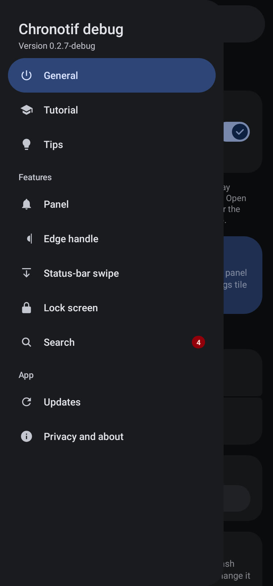

<!doctype html>
<html lang="en">
<meta charset="utf-8">
<title>Chronotif 0.2.7 settings</title>
<!-- Part 5 of the 0.2.7 video: Settings. Drawn frame by frame like lock.html: render(t) sets
     everything from the time t in seconds. The screens are the app's own, rendered by Robolectric
     at 412x883 dp (shots/s-*.jpg, 2 px per dp; see settings.md), shown 28 dp down under a drawn
     status bar. Taps, the drawer's slide, the voice sheet and the row flash are drawn over them. -->
<style>
  :root { --accent: #b7c4ff; --serif: "Newsreader", Georgia, serif; --sans: "Noto Sans", system-ui, sans-serif; }
  * { box-sizing: border-box; }
  html, body { margin: 0; width: 1080px; height: 1920px; overflow: hidden; background: #0b0c10; }
  body { font-family: var(--sans); color: #f4f1ea; }
  #bg { position: absolute; inset: 0; background: radial-gradient(1080px 1920px at 50% 0%, #1b2236 0%, #0b0c10 100%); }
  #bezel { position: absolute; left: 192px; top: 428px; width: 696px; height: 1464px; border-radius: 60px; background: #2a2d36; }
  #bezel::after { content: ""; position: absolute; inset: 4px; border-radius: 57px; background: #08090c; }
  #screen { position: absolute; left: 204px; top: 440px; width: 672px; height: 1440px; border-radius: 48px; overflow: hidden; background: #000; }
  #ui { position: absolute; left: 0; top: 0; width: 412px; height: 883px; transform: scale(1.6311); transform-origin: 0 0; }
  .lay { position: absolute; inset: 0; overflow: hidden; }

  .cap { position: absolute; left: 90px; right: 90px; top: 100px; height: 340px; display: grid; place-items: center;
         text-align: center; font: 500 56px/1.22 var(--serif); letter-spacing: -0.01em; text-wrap: balance; }
  .cap b { font-weight: 700; color: #9db8ff; }
  .kicker { font: 600 30px/1 var(--sans); letter-spacing: .16em; text-transform: uppercase; color: #9db8ff; margin-bottom: 26px; }
  .full { position: absolute; inset: 0; display: grid; place-content: center; text-align: center; gap: 28px;
          background: radial-gradient(120% 70% at 50% 35%, #1b2236 0%, #0b0c10 60%); }
  .big { font: 600 150px/1 var(--serif); letter-spacing: -0.03em; }
  .small { font: 400 52px/1.3 var(--serif); color: #c9c6bf; max-width: 820px; margin: 0 auto; text-wrap: balance; }
  .small b { color: #9db8ff; font-weight: 600; }
  .url { margin-top: 30px; font: 600 46px/1 var(--sans); color: #9db8ff; letter-spacing: 0.02em; }
  .url2 { font: 500 36px/1.3 "Noto Sans Mono", monospace; color: #c9c6bf; }

  .fill { position: absolute; inset: 0; }
  .shot { position: absolute; left: 0; width: 412px; display: block; }
  .status { position: absolute; left: 0; right: 0; top: 0; height: 28px; padding: 7px 22px 0; display: flex; justify-content: space-between;
            font: 500 13px var(--sans); z-index: 5; }
  .batt { width: 22px; height: 11px; border: 1.5px solid currentColor; border-radius: 3px; position: relative; margin-top: 3px; }
  .batt::after { content: ""; position: absolute; left: 1.5px; top: 1.5px; bottom: 1.5px; width: 13px; background: currentColor; border-radius: 1px; }
  .wall { position: absolute; inset: 0; background: linear-gradient(160deg, #3a4a78 0%, #1d2440 45%, #121522 100%); }
  .grid { position: absolute; left: 20px; right: 20px; display: grid; grid-template-columns: repeat(4, 1fr); row-gap: 22px; }
  .cell { display: flex; flex-direction: column; align-items: center; }
  .cell .ic { width: 56px; height: 56px; border-radius: 16px; display: grid; place-items: center; overflow: hidden; }
  .cell .ic svg { width: 30px; height: 30px; fill: #fff; }
  .cell span { margin-top: 6px; font: 400 12px var(--sans); color: #fff; text-shadow: 0 1px 3px rgba(0,0,0,.5); }
  .finger { position: absolute; width: 44px; height: 44px; margin: -22px 0 0 -22px; border-radius: 50%; z-index: 20;
            background: rgba(255,255,255,.35); border: 2px solid rgba(255,255,255,.8); box-shadow: 0 2px 10px rgba(0,0,0,.4); }
  .glow { position: absolute; border-radius: 18px; z-index: 6; }
</style>
<body>
<div id="bg"></div>
<div id="bezel"></div>
<div id="screen"><div id="ui"><div class="lay" id="layA"></div><div class="lay" id="layB"></div></div></div>
<div id="capA"></div><div id="capB"></div>
<div id="full"></div>

<script>
const W = 412, H = 883, TOP = 28;
const clamp = (x, a = 0, b = 1) => Math.min(b, Math.max(a, x));
const ease = (x) => (x < 0.5 ? 4 * x * x * x : 1 - Math.pow(-2 * x + 2, 3) / 2);
const out = (x) => 1 - Math.pow(1 - x, 3);
const k = (t, t0, t1) => ease(clamp((t - t0) / (t1 - t0)));
const ko = (t, t0, t1) => out(clamp((t - t0) / (t1 - t0)));
const mix = (a, b, x) => a + (b - a) * x;
const tapAt = (t, t0) => ({ o: k(t, t0 - 0.35, t0 - 0.15) * (1 - k(t, t0 + 0.25, t0 + 0.45)), press: k(t, t0 - 0.05, t0) * (1 - k(t, t0 + 0.12, t0 + 0.2)) });
const finger = (x, y, o, press = 0) => (o > 0 ? `<div class="finger" style="left:${x}px;top:${y}px;opacity:${o};transform:scale(${1 - press * 0.15})"></div>` : "");
const tap = (t, t0, x, y) => { const p = tapAt(t, t0); return finger(x, y, p.o, p.press); };

// Backgrounds of the app's own screens, sampled from the renders.
const DARK = "#0f1013", LIGHT = "#f0f0f8", FIND = "#26272c", DRAWER = "#1a1b1f";
const status = (light = false) => `<div class="status" style="color:${light ? "#1b1b1f" : "#fff"}"><span>9:41</span><span style="display:flex;gap:6px">▂▄▆ <span class="batt"></span></span></div>`;
// A real screen: shot name, scrolled by `scroll` dp; with `bar`, the search bar at its top stays put.
function screen(name, o = {}) {
  const bg = o.bg ?? DARK, s = o.scroll ?? 0;
  let h = `<div class="fill" style="background:${bg}"></div>
    <div style="position:absolute;left:0;right:0;top:${TOP}px;bottom:0;overflow:hidden"></div>`;
  if (o.bar && s > 0) h += `<div style="position:absolute;left:0;right:0;top:${TOP}px;height:58px;overflow:hidden;background:${bg}"></div>`;
  return h + (o.extra ?? "") + status(o.light);
}
// Screen y (dp) of a point at y in a shot scrolled by s.
const Y = (y, s = 0) => y + TOP - s;
const glow = (x, y, w, h, o, light = false) => (o > 0 ? `<div class="glow" style="left:${x}px;top:${y}px;width:${w}px;height:${h}px;opacity:${o};background:${light ? "rgba(70,90,180,.16)" : "rgba(183,196,255,.16)"};box-shadow:inset 0 0 0 2px ${light ? "#4a5ec0" : "var(--accent)"}"></div>` : "");
const pulse = (t, t0, t1) => Math.sin(clamp((t - t0) / (t1 - t0)) * Math.PI);

const ICON = `<svg viewBox="18 18 72 72" style="width:56px;height:56px"><rect x="18" y="18" width="72" height="72" rx="16" fill="#1C1C1E"/>
  <path fill="#FFF" d="M36,34h36a6,6 0,0 1,6 6v14a6,6 0,0 1,-6 6H36a6,6 0,0 1,-6 -6V40a6,6 0,0 1,6 -6z"/>
  <path fill="#0A84FF" d="M41,40.5a4.5,4.5 0,1 1,0 9a4.5,4.5 0,1 1,0 -9z"/>
  <path fill="#FFF" fill-opacity=".6" d="M38,64h32a3,3 0,0 1,0 6H38a3,3 0,0 1,0 -6z"/>
  <path fill="#FFF" fill-opacity=".3" d="M43,73h22a2,2 0,0 1,0 4H43a2,2 0,0 1,0 -4z"/></svg>`;
const G = {
  chat: "M4,3h16a2,2 0,0 1,2 2v10a2,2 0,0 1,-2 2H9l-5,4v-4a2,2 0,0 1,-2 -2V5a2,2 0,0 1,2 -2z",
  calendar: "M7,2h2v2h6V2h2v2h2a2,2 0,0 1,2 2v14a2,2 0,0 1,-2 2H5a2,2 0,0 1,-2 -2V6a2,2 0,0 1,2 -2h2V2zM5,9v11h14V9H5zM7,11h4v4H7v-4z",
  photo: "M21 19V5c0-1.1-.9-2-2-2H5c-1.1 0-2 .9-2 2v14c0 1.1.9 2 2 2h14c1.1 0 2-.9 2-2zM8.5 13.5l2.5 3.01L14.5 12l4.5 6H5l3.5-4.5z",
  music: "M12 3v10.55c-.59-.34-1.27-.55-2-.55-2.21 0-4 1.79-4 4s1.79 4 4 4 4-1.79 4-4V7h4V3h-6z",
  bank: "M12,2L21,7v2H3V7l9,-5zM5,10h2v7H5v-7zM9,10h2v7H9v-7zM13,10h2v7h-2v-7zM17,10h2v7h-2v-7zM3,18h18v3H3v-3z",
  parcel: "M12,2l9,4.5v11L12,22l-9,-4.5v-11L12,2zM12,4.2L6.2,7.1 12,10l5.8,-2.9L12,4.2zM5,8.7v7.6l6,3v-7.6l-6,-3zM19,8.7l-6,3v7.6l6,-3V8.7z",
  camera: "M12 15.2a3.2 3.2 0 1 0 0-6.4 3.2 3.2 0 0 0 0 6.4zM9 2 7.17 4H4c-1.1 0-2 .9-2 2v12c0 1.1.9 2 2 2h16c1.1 0 2-.9 2-2V6c0-1.1-.9-2-2-2h-3.17L15 2H9z",
  mic: "M12 14c1.66 0 3-1.34 3-3V5c0-1.66-1.34-3-3-3S9 3.34 9 5v6c0 1.66 1.34 3 3 3zm5.3-3c0 3-2.54 5.1-5.3 5.1S6.7 14 6.7 11H5c0 3.41 2.72 6.23 6 6.72V21h2v-3.28c3.28-.48 6-3.3 6-6.72h-1.7z",
};
const glyph = (g, c) => `<div class="ic" style="background:${c}"><svg viewBox="0 0 24 24"><path d="${G[g]}"/></svg></div>`;
// The home screen; `chronotif` puts Chronotif's icon in the first row.
function home(wallFilter = "none") {
  const apps = [["Chronotif", ICON], ["Murmur", glyph("chat", "#2EAD6B")], ["Daybook", glyph("calendar", "#4C6FE0")], ["Glimmer", glyph("photo", "#C2477A")],
    ["Hum Music", glyph("music", "#7E57C2")], ["Fernbank", glyph("bank", "#14806F")], ["Parcelly", glyph("parcel", "#E8813A")], ["Camera", glyph("camera", "#3C4043")]];
  return `<div class="wall" style="filter:${wallFilter}"></div><div class="grid" style="top:560px">${apps.map(([n, ic]) =>
    `<div class="cell">${n === "Chronotif" ? `<div class="ic" id="appicon">${ic}</div>` : ic}<span>${n}</span></div>`).join("")}</div>${status()}`;
}

// --- scenes: [start, end, kicker, caption, draw(t)] ---
const SCENES = [
  [2.25, 8.2, "A screen per section", "Each section gets the whole screen. The <b>menu</b> slides out a list of them.", (t) => {
    // The menu opens the drawer over General; Edge handle is picked and the drawer slides away.
    const open = k(t, 3.25, 3.6) * (1 - k(t, 5.2, 5.5)), picked = t >= 5.2;
    let h = screen(picked ? "s-handle" : "s-gen");
    if (open > 0) {
      // The drawer, cut from its render, sliding in over a scrim; its header without the debug build's name.
      h += `<div class="fill" style="background:rgba(0,0,0,${0.5 * open})"></div>
        <div style="position:absolute;left:0;top:0;bottom:0;width:254px;overflow:hidden;transform:translateX(${(open - 1) * 260}px);box-shadow:4px 0 16px rgba(0,0,0,.4)">
        <div class="fill" style="background:${DRAWER}"></div>
        <div style="position:absolute;left:0;right:0;top:${TOP}px;height:80px;background:${DRAWER};padding:18px 0 0 16px">
          <div style="font:400 22px var(--sans);color:#e4e2e9">Chronotif</div><div style="font:400 12px var(--sans);color:#c6c5d0;margin-top:1px">Version 0.2.7</div></div>
        ${picked ? "" : ""}</div>`;
    }
    return h + tap(t, 3.2, 41, Y(30)) + tap(t, 5.1, 120, Y(358));
  }],
  [8.2, 13.0, "Back where you left it", "Close Settings and open them again: they <b>reopen</b> on the same page.", (t) => {
    // Settings go home; the icon opens them on Edge handle again.
    const away = k(t, 8.9, 9.3), back = k(t, 11.0, 11.4);
    let h = home();
    const sc = (x) => `transform:scale(${mix(0.2, 1, x)});transform-origin:42px 588px;opacity:${x};border-radius:${mix(40, 0, x)}px;overflow:hidden`;
    if (away < 1) h += `<div class="fill" style="${sc(1 - away)}">${screen("s-handle")}</div>`;
    if (back > 0) h += `<div class="fill" style="${sc(back)}">${screen("s-reopened")}</div>`;
    return h + tap(t, 10.9, 48, 588);
  }],
  [13.0, 18.8, "General, first", "Chronotif’s <b>on switch</b> at the top, then a checklist with a button for each step left.", (t) => {
    const done = t >= 16.9;
    const fade = k(t, 16.9, 17.2);
    let h = screen("s-gen-steps") + glow(10, Y(134), 392, 126, pulse(t, 13.6, 14.9)) + glow(10, Y(355), 392, 102, pulse(t, 14.6, 15.9));
    if (fade > 0) h += `<div class="fill" style="opacity:${fade}">${screen("s-gen")}</div>`;
    return h + (done ? "" : tap(t, 16.0, 111, Y(673)) + tap(t, 16.7, 111, Y(797)));
  }],
  [18.8, 24.4, "Light or dark", "As your phone is, or as you pick under <b>Settings theme</b>.", (t) => {
    const s = 380 * k(t, 19.2, 20.4), light = k(t, 21.5, 21.8);
    let h = screen("s-gen-tall", { scroll: s, bar: true });
    if (light > 0) h += `<div class="fill" style="opacity:${light}">${screen("s-gen-tall-light", { scroll: s, bar: true, bg: LIGHT, light: true })}</div>`;
    return h + tap(t, 21.4, 205, Y(751, 380));
  }],
  [24.4, 30.2, "In your colours", "Settings take your <b>wallpaper’s</b> colours: rounded groups, choices side by side.", (t) => {
    // Three wallpapers in turn; each time Settings follow its colours.
    const hues = [0, 150, -95];
    const step = Math.min(2, Math.floor((t - 24.4) / 1.93)), t0 = 24.4 + step * 1.93;
    const f = `hue-rotate(${hues[step]}deg)`;
    const showHome = t - t0 < 0.6 && step > 0;
    const fade = step > 0 ? k(t, t0 + 0.5, t0 + 0.75) : 1;
    let h = home(f);
    h += `<div class="fill" style="opacity:${showHome ? 0 : fade}"><div class="fill" style="filter:${f}">${screen("s-handle")}</div></div>`;
    return h;
  }],
  [30.2, 37.6, "Search settings", "Results change with <b>each letter</b>, show where a setting lives and what it’s set to.", (t) => {
    // Tap the bar, type "colour", pick a result: its page opens at it, and the row flashes.
    const n = clamp(Math.floor((t - 31.3) / 0.28) + 1, 0, 6);
    const picked = t >= 35.4;
    if (picked) {
      const s = screen("s-picked") + glow(12, Y(544), 389, 90, pulse(t, 35.6, 37.0) * 0.9);
      return s;
    }
    const field = t < 30.95 ? screen("s-gen") : screen(`s-find-${n}`, { bg: FIND });
    return field + tap(t, 30.8, 200, Y(30)) + tap(t, 35.3, 150, Y(156));
  }],
  [37.6, 42.8, "Or say it", "The <b>microphone</b> hands the search to your phone’s voice input.", (t) => {
    const sheet = k(t, 38.55, 38.85) * (1 - k(t, 40.85, 41.1));
    const said = "double tap".slice(0, clamp(Math.floor((t - 39.3) / 0.11), 0, 10));
    let h = t < 41.0 ? screen("s-find-0", { bg: FIND }) : screen("s-find-double", { bg: FIND });
    // The mic in the bar while it's empty (the render has no speech service, so it's drawn here).
    if (t < 41.0) h += `<svg viewBox="0 0 24 24" style="position:absolute;left:372px;top:${Y(14)}px;width:24px;height:24px;fill:#c6c5d0"><path d="${G.mic}"/></svg>`;
    if (sheet > 0) {
      const lvl = 1 + 0.12 * Math.sin(t * 18) * (said.length > 0 && said.length < 10 ? 1 : 0.2);
      h += `<div class="fill" style="background:rgba(0,0,0,${0.45 * sheet})"></div>
        <div style="position:absolute;left:0;right:0;bottom:0;height:300px;border-radius:28px 28px 0 0;background:#2b2c31;transform:translateY(${(1 - sheet) * 310}px);text-align:center">
          <div style="margin-top:28px;font:400 15px var(--sans);color:#c6c5d0">${said ? "" : "Speak now"}</div>
          <div style="margin-top:6px;height:34px;font:400 26px var(--sans);color:#fff">${said}</div>
          <div style="margin:44px auto 0;width:84px;height:84px;border-radius:50%;background:#b7c4ff;display:grid;place-items:center;transform:scale(${lvl})">
            <svg viewBox="0 0 24 24" style="width:40px;height:40px;fill:#1b2b66"><path d="${G.mic}"/></svg></div></div>`;
    }
    return h + tap(t, 38.4, 384, Y(26));
  }],
  [42.8, 48.4, "Tips", "A Tips page lists the gestures you can’t see, Search’s tip among them.", (t) => {
    const s = 330 * k(t, 43.4, 46.0);
    return screen("s-tips-tall", { scroll: s, bar: true }) + glow(10, Y(393, s), 392, 156, pulse(t, 46.2, 48.3));
  }],
  [48.4, 54.4, "Set up Search", "Settings → Search starts with a <b>checklist</b>: allow a step, say Not now, or add the widget and tile.", (t) => {
    const nn = t >= 49.65, s = 520 * k(t, 50.6, 52.4);
    let h = screen(nn ? "s-search-tall-notnow" : "s-search-tall", { scroll: s, bar: true });
    h += glow(12, Y(828, s), 389, 228, pulse(t, 52.4, 54.3));
    return h + tap(t, 49.5, 202, Y(392));
  }],
  [54.4, 59.6, "What Search can do", "Below its settings, the list of what <b>Search</b> can do, with examples to try.", (t) => {
    const s = mix(520, 2110, k(t, 54.7, 56.9));
    return screen("s-search-tall-notnow", { scroll: s, bar: true });
  }],
];
const FULL = [
  [0, 2.6, `<div class="big">Chronotif</div><div class="small">What’s new in <b>0.2.7</b>, part 5: <b>settings</b>.</div>`],
  [59.25, 64.6, `<div class="big">Help shape it</div><div class="small">Ideas or bugs? Tell us. Chronotif gets better from what you report.</div>
    <div class="url">github.com/nagarete/chronotif/issues</div><div class="url2">chronotif.com</div>`],
];
const XF = 0.35;
const $ = (id) => document.getElementById(id);
const capHTML = (kick, text) => `<div class="cap"><div><div class="kicker">${kick}</div>${text}</div></div>`;

function render(t) {
  let i = SCENES.findIndex(([t0, t1]) => t >= t0 && t < t1);
  if (i < 0) i = t < SCENES[0][0] ? 0 : SCENES.length - 1;
  const [t0, , kick, text, draw] = SCENES[i];
  const prev = SCENES[i - 1];
  const fade = prev ? k(t, t0, t0 + XF) : 1;
  $("layA").innerHTML = prev && fade < 1 ? prev[4](prev[1]) : "";
  $("layB").innerHTML = draw(t);
  $("layB").style.opacity = fade;
  $("capA").innerHTML = prev && fade < 1 ? capHTML(prev[2], prev[3]) : "";
  $("capA").style.opacity = 1 - fade;
  $("capB").innerHTML = capHTML(kick, text);
  $("capB").style.opacity = clamp((t - t0 - 0.15) / 0.3);
  $("full").innerHTML = FULL.filter(([f0, f1]) => t >= f0 && t < f1).map(([f0, f1, html]) =>
    `<div class="full" style="opacity:${f0 === 0 ? 1 - k(t, f1 - XF, f1) : k(t, f0, f0 + XF)}">${html}</div>`).join("");
  // render.mjs awaits this, so no frame is taken before its screens are decoded.
  return Promise.all([...document.querySelectorAll("img")].map((im) => im.decode().catch(() => {})));
}
window.render = render;
window.DURATION = 64.6;
render(Number(new URLSearchParams(location.search).get("t") ?? 0));
</script>
